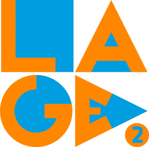
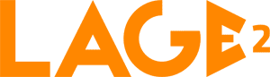
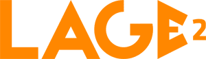

LAGE2's Media Kit
What it is
LAGE2 stands for Laboratório de Apoio e Gestão de actividades Extra-curriculares dos Estudantes (Laboratory for the Management and Support of Students' Extracurricular Activities). I entered for this group to organize a seasonal event, then I enrolled a photography group, then I was promoted to lead the group (1st year), then to lead the entire cultural section (2nd year) and finally to lead the entire LAGE2 (3rd year). I always loved extracurricular activities, so joining LAGE2 was a no-brainer.
Why I've done it
During the three years I've been there LAGE2 changed a lot. During my leadership I improved the LAGE2's institutional relationships with other students' groups and the IST-Taguspark's management board; I structured LAGE2 into a matrix organization; and I started a knowledge management and sharing effort.
LAGE2 was rejuvenated. Therefore, LAGE2 needed a rebranding. LAGE2's new image should reflect its new qualities: youthful, vibrant, amusing, simple, minimalist. Gone was the serif font, the different circle's sizes, and the weak legibility.


Now it has a lot more impact and flexibility. I easily created a squared version for social media usage. I even created a version for lower resolutions (for usage under 100px). And now every element tells a story. The blue background (because we work at IST), the complementary orange (because we complement students' activities at IST), and the different shapes (because of the different activities that LAGE2 supports).

 

Lessons learned
I conducted a brainstorming with LAGE2's most influencial stakeholders to collect ideas for the new branding. Due to past pixelization problems, we decided to design the new logo using vector drawing. I used my previous knowledge about InkScape to create the new logo. We decided to adopt the new IST's blue and maintain our "trademark" orange, and since both are complementary colors the result was great. I also learned about design priciples for logos and about having different logos for different resolutions (specially lower resolutions).